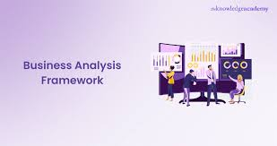
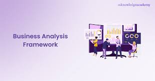
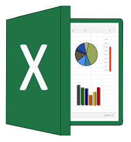

Hi i'm Pamela, a Business and Data Analyst with a Bachelor's degree in International Relations and Diplomacy. My background gives me a global perspective and strong communication skills, which i now apply to solving real world business challenges through data. With hands-on experience in tools like Power Bi, Excel, SQL, Tableau, task & process modeling tools like jira, trello ,draw.io and google sheet, i help business make informed decision by turning complex data into clear, actionable insights,i enjoy digging into numbers to find patterns,optimize performance and support growth but i'm more than just an analyst. i'm also a chef by passion and a beauty entrepreneur by vision, i run a culinary brand and a growing beauty business both built on creativity, consistency and customer care. these ventures have sharpened my understanding of branding, marketing and what it takes to build something from the ground up. wheather i'm analyzing datasets, curating beauty products or creating in the kitchen, i bring the same energy, purpose and excellence and a desire to make things better. .


I developed and deployed a comprehensive Power Bi dashboard for Grace hospital that unifed financial , patient and doctors performance data, providing leadership with real-time visibility into revenue streams, operational costs and service utilization, this enabled the hospital to strengthen its financial viability, identify and act on growth opportunities and enhance both patient care delivery and medical staff productivity through data driven decision-making.
Atoll Resort, Excel Project
 > Atoll Resort is a luxurious beachfront hotel management company that caters to leiure and business travelers alike. As part of its commitment, the hotel management teams want to gain deeperinsights into their reservation data. to achieve this i collected and organized data related to bookings, cancellations, customer preferences and revenue to gain actionable insight and data-driven recommendations to enhance guest experience, optimize hotel operations and maximize revenue.
> Atoll Resort is a luxurious beachfront hotel management company that caters to leiure and business travelers alike. As part of its commitment, the hotel management teams want to gain deeperinsights into their reservation data. to achieve this i collected and organized data related to bookings, cancellations, customer preferences and revenue to gain actionable insight and data-driven recommendations to enhance guest experience, optimize hotel operations and maximize revenue.
OTS Electronics is a mid sized electronics retail company with operations spanning across multiple regions. The company facing a challenge related to thier sales and shipping operations. My team and i looked to reverse the trend and gained insight from the data provided to address these issues and improved their overall performance.
 An Ev consulting firm, which specializes in analyzing the electric vehicle market to pre comprehensive insights into the growth, technological advancements and regional adoption trends and electric vehicles. Using the data provided i used tableau to gather insight to address the growing demand for detailed within the rapidly expanding electric vehicle (EV) market to enable strategic decision-making in the sustainable transportation sector.

An Ev consulting firm, which specializes in analyzing the electric vehicle market to pre comprehensive insights into the growth, technological advancements and regional adoption trends and electric vehicles. Using the data provided i used tableau to gather insight to address the growing demand for detailed within the rapidly expanding electric vehicle (EV) market to enable strategic decision-making in the sustainable transportation sector.

In my work as a Data/Business Analyst, i apply business analysis framework and methodologies to deliver pratical solutions. i start with Gap analysis to identify what's missing between current and desired processe, then follow the SDLC to guide development from requiremens to delivery. I prepare Business Cases to justify projects and ensure value, while working in an Agile/Scrum environment to deliver results in iterative sprints with continuous feedbeack. This approach ensures every solution is strategic, data- driven and impactful.

Check out how i utilised Excel to turn unstructured data into actionable insights, from meticulous cleaning to visually appealing visualizations.